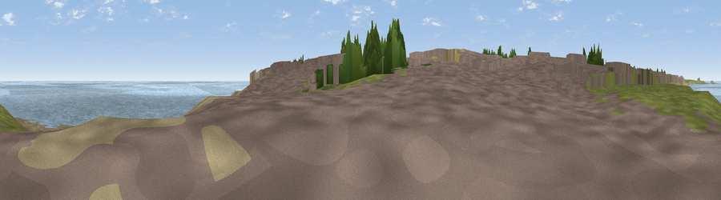

Viewpoint near Whitley Bay
#37313 in England · top 79% of its area beats it · near Whitley BayThe view, rendered

A 360° render of this exact spot computed from the terrain model, tree cover and land cover — summer colours, afternoon light, calibrated against photographs of famous viewpoints. Real trees, hedges and buildings will differ in detail.
The panorama
Grey silhouette: terrain skyline in each direction (720 bearings, Earth curvature and refraction included). Dashed green: skyline with trees (+15 m) and buildings (+8 m) as obstacles. Blue strip: how far the ground is visible on each bearing.
Where the view opens
Wedge length = distance to the farthest visible ground on that bearing (vegetation-aware). Rings at 10, 25 and 50 km.
What fills the view
86% water · 11% bare ground · 2% grassland ·
Angular shares of the visible panorama (visual magnitude), not map area. Landscape diversity 0.21 (0–1 Shannon).
Key numbers
More beautiful places nearby
The staircase of upgrades: each row has a higher view potential than everything closer. Driving times are estimates from straight-line distance, calibrated against real road routing — check an actual route before setting out.
| Place | Direction | Drive | Score |
|---|---|---|---|
| Viewpoint near Old Hartley | NNW · 2 km | ~6 min | 43.8 |
| Viewpoint near Tynemouth | SSE · 4 km | ~9 min | 59.0 |
| Viewpoint near Whitburn | SSE · 9 km | ~18 min | 67.3 |
| Northumberlandia viewpoint | WNW · 13 km | ~23 min | 68.7 |
| White Hill | SSW · 15 km | ~26 min | 69.8 |
| Penshaw Hill | S · 18 km | ~32 min | 75.1 |
| Viewpoint near Sunniside | SW · 20 km | ~34 min | 77.6 |
| Pontop Pike | SW · 28 km | ~45 min | 77.8 |
55.04795, -1.44610 · source: osm viewpoint · position refined by local search. Computed location — check access rights before visiting.